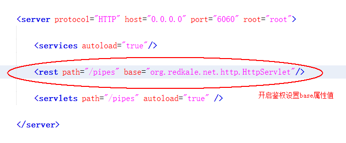

REST 敏捷开发
通过服务注解生成 REST 接口，减少接入层的重复代码。
本页目录
Redkale 入门教程 02 -- REST敏捷开发
REST是 Redkale 的主要功能之一，REST提供的功能是根据Service自动生成HttpServlet，需要注意的是 Redkale里的REST与标准的RESTfull规范完全不同，仅仅名称类似。标准的REST规范比较死板，只是在请求URL和Method上做文章，功能单一。Redkale里的REST功能是很强大的， 无论登陆、鉴权、文件上传下载、WebSocket都可以REST化，几乎完全可以省去HttpServlet。
| 注解类名 | 功能描述 |
|---|---|
| @RestService | 标记Service需要REST化。 |
| @RestMapping | 标记请求的方法名，同一方法上可重复标记(需确保name值在Service中是唯一的)。 其标记的Service方法只能throws IOException或不抛异常。 |
| @RestConvert | 标记请求的方法名上，对返回值以JSON形式输出时进行字段的屏蔽或开启进行设置。 |
| @RestConvertCoder | 标记请求的方法名上，对返回值以JSON形式输出时对类指定的字段的进行设置。 |
| @RestParam | 获取常规参数值, 字段类型可以是 基础数据类型/Flipper/CompletionHandler/String/JavaBean name='&' 表示当前用户(@HttpUserType) name='#' 表示截取uri最后一段 name='#xxx:' 表示从uri中/pipes/xxx:v/截取xxx:的值 |
| @RestHeader | 通过request.getHeader获取参数值, 字段类型只能是String |
| @RestCookie | 通过request.getCookie获取Cookie值, 字段类型只能是String |
| @RestBody | 通过request.getBody获取参数值, 字段类型只能是String/byte[]/JavaBean |
| @RestSessionid | 获取sessionid, 字段类型只能是String |
| @RestAddress | 获取客户端IP地址, 字段类型只能是String |
| @RestURI | 获取请求URL, 字段类型只能是String |
| @RestUploadFile | 获取上传文件, 字段类型只能是File/File[]/byte[] |
| WebSocket | |
| @RestWebSocket | 标记WebSocket需要REST化，只能标记在WebSocket的子类上 |
| @RestOnMessage | WebSocket的消息路由，类似@RestMapping，不同的请求映射到不同的方法 |
标记@RestService的Service对象在服务启动时会自动生成原始的HttpServlet加载到当前的HttpServer中，其HttpServlet的请求URL规则为：path + "/" + @RestService.catalog() + "/" + @RestService.name() + "/*"， 其中path为application.xml文件中<rest>节点的path属性值。节点rest和servlets设计一个path属性是为了所有动态请求加个前缀方便静动分离，没有采取.jsp .do那种刷存在感的后缀方式也是处于安全考虑，外界根据URL无法判断后台使用的是什么语言或框架开发。
REST会根据Service方法的返回类型不同做出不同的结果输出。
| 返回类型 | 功能描述 |
|---|---|
| void | 以RetResult.success()的JSON形式输出。 |
| String | 以字符串输出。 |
| File | 以下载文件形式输出。 |
| HttpResult | 将HttpHeader、HttpCookie、Result统一输出 |
| CompletableFuture | 异步输出，根据CompletableFuture.get()结果类型进行不同形式输出 |
| JavaBean/其他 | 以JSON形式输出 |
要开启REST功能需要在application.xml对应的HttpServer下加入rest节点:

如果需要加入鉴权功能更，需要自定义HttpServlet基类，并重载preExecute、authenticate方法。详情见 BaseHttpServlet
用户登陆范例
@RestService(name = "user", comment = "用户服务")
public class UserService extends AbstractService {
@RestMapping(name = "login", auth = false, comment = "用户登陆")
public RetResult login(String account, String password, @RestHeader(name = "User-Agent") String agent,
@RestSessionid(create = true) String sessionid, @RestAddress String clientAddr) {
if (!"redkale".equals(account)) {
return new RetResult(1001, "账号不是redkale");
}
if (!"123456".equals(password)) {
return new RetResult(1002, "密码错误");
}
System.out.println("用户(" + account + ")的回话ID为: " + sessionid + ", 通过客户端(" + agent + ")在" + clientAddr + "登陆。");
return RetResult.success();
}
}
浏览器输入: http://127.0.0.1:6060/pipes/user/login?account=redkale&password=123456
返回结果： {"retcode":0,"success":true}
后台打印： 用户(redkale)的回话ID为: 6110627db03b2b4a2c45a2fcb2aa1403, 通过客户端(Mozilla/5.0 (Windows NT 10.0; WOW64) AppleWebKit/537.36 (KHTML, like Gecko) Chrome/58.0.3029.110 Safari/537.36)在127.0.0.1登陆。
REST的注解不仅可以注解在Service的方法参数上， 还可以在Service的方法的JavaBean参数的类里的字段进行注解。
public class LoginBean {
private String account;
private String password;
@RestHeader(name = "User-Agent")
private String agent;
@RestSessionid(create = true)
private String sessionid;
@RestAddress
private String clientAddr;
@Override
public String toString() {
return JsonConvert.root().convertTo(this);
}
/** 以下省略getter setter方法 */
}
@RestService(name = "user", comment = "用户服务")
public class UserService extends AbstractService {
@RestMapping(name = "login", auth = false, comment = "用户登陆")
public RetResult login(LoginBean bean) {
if (bean == null) {
return new RetResult(1000, "没有登陆信息");
}
if (!"redkale".equals(bean.getAccount())) {
return new RetResult(1001, "账号不是redkale");
}
if (!"123456".equals(bean.getPassword())) {
return new RetResult(1002, "密码错误");
}
System.out.println("用户(" + bean.getAccount() + ")通过客户端(" + bean.getAgent() + ")在" + bean.getClientAddr() + "登陆。");
return RetResult.success();
}
}
浏览器输入: http://127.0.0.1:6160/pipes/user/login?bean={account:redkale,password:123456}
返回结果： {"retcode":0,"success":true}
后台打印： 用户(redkale)通过客户端(Mozilla/5.0 (Windows NT 10.0; WOW64) AppleWebKit/537.36 (KHTML, like Gecko) Chrome/58.0.3029.110 Safari/537.36)在127.0.0.1登陆。
如果用户登陆成功后需要跳转到首页或者还可能需要输出一些Cookie值，就需要使用HttpResult作为返回结果，例如：
@RestService(name = "user", comment = "用户服务")
public class UserService extends AbstractService {
@RestMapping(name = "login", auth = false, comment = "用户登陆")
public HttpResult login(LoginBean bean) {
if (bean == null) {
return new HttpResult<>(new RetResult(1000, "没有登陆信息"));
}
if (!"redkale".equals(bean.getAccount())) {
return new HttpResult<>(new RetResult(1001, "账号不是redkale"));
}
if (!"123456".equals(bean.getPassword())) {
return new HttpResult<>(new RetResult(1002, "密码错误"));
}
System.out.println("用户(" + bean.getAccount() + ")通过客户端(" + bean.getAgent() + ")在" + bean.getClientAddr() + "登陆。");
return new HttpResult().header("Location", "/index.html").cookie(new HttpCookie("curraccount", bean.getAccount()));
}
}
文件上传
@RestService(name = "file", comment = "文件服务")
public class FileService extends AbstractService {
private static final Logger logger = Logger.getLogger(FileService.class.getSimpleName());
private static final String format = "%1$tY%1$tm%1$td%1$tH%1$tM%1$tS";
@RestMapping(name = "upload", auth = false, comment = "文件上传，不鉴权")
public RetResult upload(@RestUploadFile(maxLength = 1 * 1024 * 1024, fileNameReg = ".*\\.doc$") File tmpFile) throws IOException {
if (tmpFile == null) return new RetResult(1001, "没有上传文件或文件大小超过1M或文件不是.doc后缀");
//按日期命名 如 file-20170601133520.doc
try {
logger.finest("用户上传的文件名为: " + MultiContext.getFileName(tmpFile));
File destFile = new File("D:/docs/file-" + String.format(format, System.currentTimeMillis()) + ".doc");
destFile.getParentFile().mkdirs();
if (!tmpFile.renameTo(destFile)) { //tmpFile与destFile不在同一盘符下会导致renameTo失败
java.nio.file.Files.copy(tmpFile.toPath(), destFile.toPath(), StandardCopyOption.ATOMIC_MOVE);
}
} finally { //如果发生异常，将临时文件从{APP_HOME}/tmp 目录下删除
tmpFile.delete();
}
return RetResult.success();
}
}
WebSocket与其REST化将在以后的章节详细介绍。